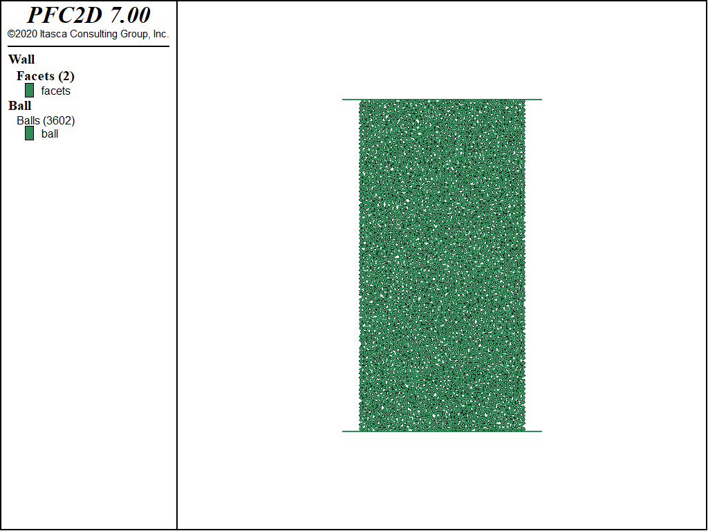
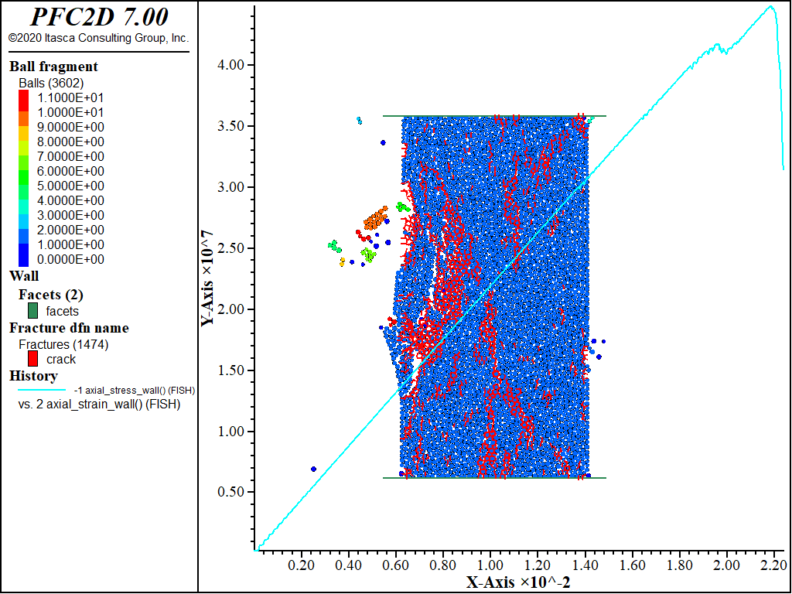
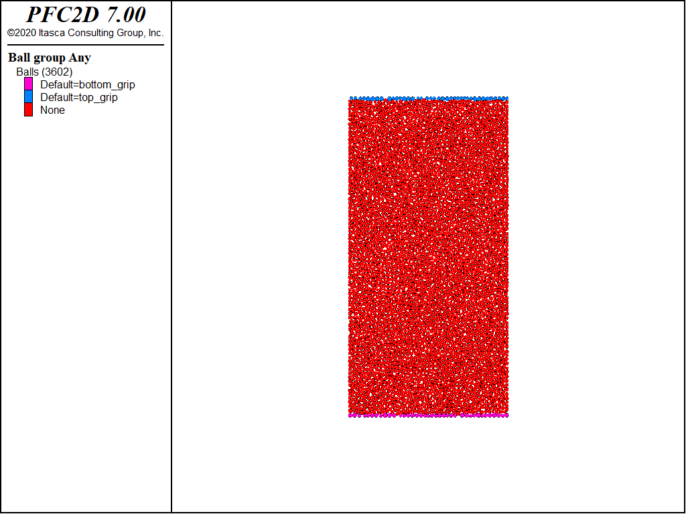
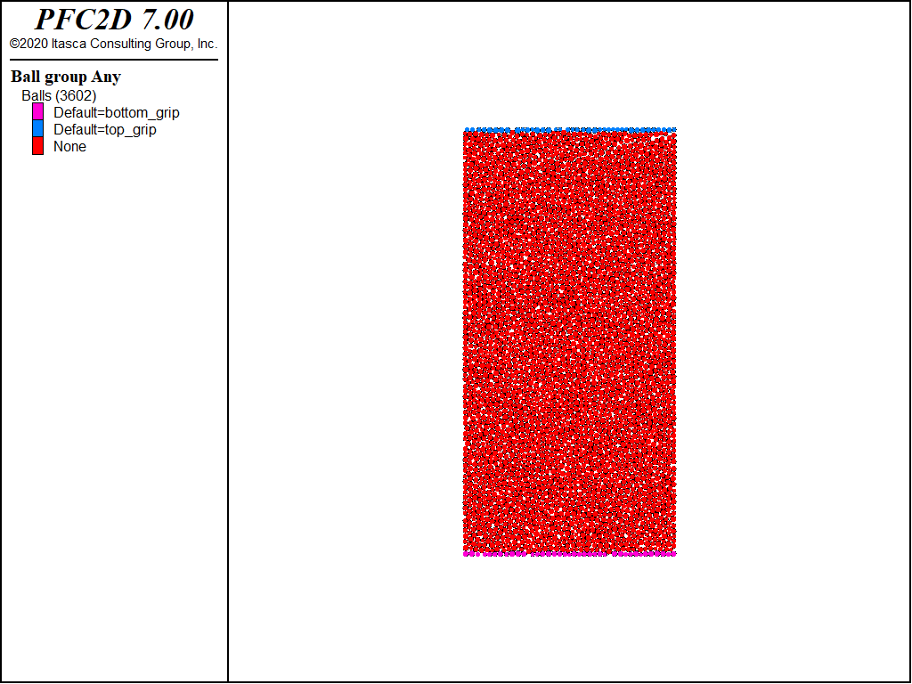
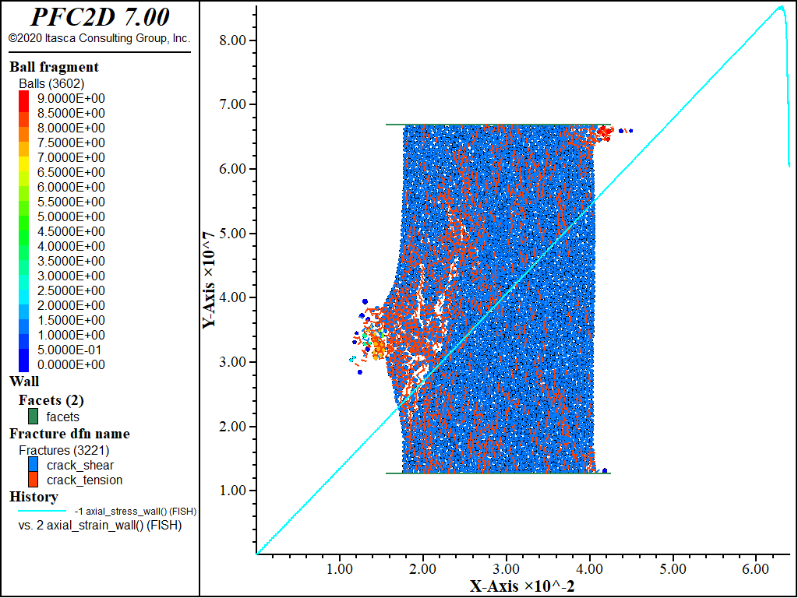
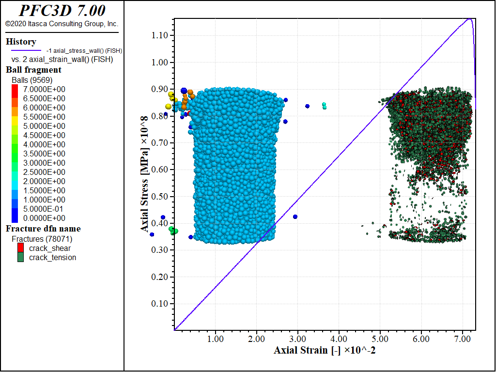

岩石试验
引言
注意
本算例的项目文件可在 PFC 中查看或运行。[1]所用的数据文件（data files）列于本算例末尾。
本算例演示如何模拟岩芯试样的室内试验，具体包括无侧限压缩试验和直接拉伸试验。在实验室中，直接拉伸试验难以实施，但在数值模型的理想化环境中，该试验是可行的，并且与间接的巴西劈裂试验相比，能提供更可靠的岩石抗拉强度估计值。
比较了两种不同的模型：一种试样用 线性平行黏结（linear parallel bonds） 黏结，另一种试样采用 平节理（flat joint） 接触模型。众所周知，PFC 中的平行黏结模型给出的抗压强度与抗拉强度之比过低，不符合实际 [Potyondy2004]。采用平节理接触模型可以克服这一问题：该模型中接触具有有限长度，因此颗粒的转动会受到抵抗 [Potyondy2012]。
PFC2D 模型
无黏结试样
首先，按照教程“生成黏结颗粒集合体（Generating a Bonded Assembly）”中的类似步骤，生成一个所有接触均赋予线性模型的无黏结集合体。试样长 10 cm、直径 5 cm，符合典型室内岩芯试样的尺寸。墙体的生成方式使其延伸超出试样边缘，以便在加载过程中适应试样尺寸的变化（参见 {二维“make_sample.p2dat 数据文件（make_sample.p2dat）”；三维“make_sample.p3dat 数据文件（make_sample.p3dat）”}）。
接触刚度通过接触 methods 而非 properties 设置。接触方法会执行少量计算以自动设置属性。例如，在三维中，接触处的法向刚度与有效杨氏模量和颗粒半径成正比 如此处所述（as described here）。因此，可以设置接触的变形特性 ‘emod’（以应力为单位），线性刚度将根据颗粒半径自动计算。本算例中假定应力量均以 Pa 为单位。无黏结试样如下所示。


图 1：无黏结材料模型。
平行黏结试样使用 {二维“parallel_bonded.p2dat 数据文件（parallel_bonded.p2dat）”；三维“parallel_bonded.p3dat 数据文件（parallel_bonded.p3dat）”} 中的命令生成。平行黏结刚度同样使用 methods 设置。使用平行黏结时需要注意，线性刚度（contact method deform）和黏结材料刚度（contact method pb_deform）都需要设置。
; 设置线性刚度
contact method deform emod 1.0e9 krat 1.0
; 设置黏结材料的刚度
contact method pb_deform emod 1.0e9 krat 1.0
当接触类型由线性改为平行黏结时，线性刚度不会被继承，必须重新设置。
另一点需要注意的是 lin-mode 1 的使用，
; 将线性力设为 0.0，并强制重置线性接触力。
contact property lin_force 0.0 0.0 lin_mode 1
ball attribute force-contact multiply 0.0 moment-contact multiply 0.0
即在将线性力重置为 0 时。
无侧限抗压强度
UCS 试验的执行方式很简单：如 {二维“ucs.p2dat 数据文件（ucs.p2dat）”；三维“ucs.p3dat 数据文件（ucs.p3dat）”} 文件所示，只需使顶墙向下移动、底墙向上移动。唯一的技巧在于记录轴向应力和应变。使用一个小的 FISH 函数对所有作用在墙上的竖向力求和，再除以试样宽度，即可得到轴向应力。应变则直接由墙的位移除以试样初始长度计算。试样的初始宽度和长度在试验开始时确定。请注意，这会在应力计算中引入小的误差，因为试验过程中试样宽度实际上会发生变化，而该函数并未考虑这一点。
模拟岩石试验时非常有用的 FISH 函数集在 {二维“fracture.p2fis”；三维“fracture.p3fis 文件（fracture.p3fis）”} 中给出。这些函数跟踪黏结断裂，并对每一处黏结断裂向 DFN 中添加一条裂隙。随后，在试验过程中和/或试验结束后都可以方便地绘制这些裂缝。此外，这些函数还可勾勒出试样中的破碎块体。破碎块体是指模型中与其他部分之间没有完整黏结相连的一块区域。
对试样进行加载，直至轴向应力降至峰值应力的 70% 以下。平行黏结试样的 UCS 试验结果示于下一幅图中，同时在试样图像上方绘制了轴向应力随轴向应变的变化曲线。应力与应变的计算假定压应力为负；但在下一幅图中，为符合岩石力学惯例，绘图作了反向处理，以压缩为正。该试样的 UCS 为 33.9 MPa。请注意，由于颗粒堆积本身具有随机性，在不同计算机上运行本算例可能会得到略有差异的结果。


图 2：UCS 试验后的平行黏结材料。裂纹以黑色线条和红色线条表示，分别对应拉伸破坏与剪切破坏。轴向应力随轴向应变的变化关系（压缩为正）以绿色线条绘制。
直接拉伸试验
在与 UCS 试验相同的数值试样上模拟直接拉伸试验（二维情形参见“tension.p2dat 数据文件（tension.p2dat）”，三维情形参见“tension.p3dat 数据文件（tension.p3dat）”）。为实施该试验，需删除墙体，并将试样顶部和底部的一排球颗粒指定为“夹具”（见下图）。顶部夹具向上移动、底部夹具向下移动，以施加拉伸荷载。


图 3：用于施加拉伸荷载的颗粒夹具以绿色和红色显示。
由于墙体已被删除，应力与应变必须以其他方式测量。应力通过在试样中心创建一个测量圆来测量。该应力通过对测量圆内的接触力求平均来计算，具体说明见此处（as described here）。
应变通过观测两个标距颗粒的位移来计算：一个位于模型顶部，另一个位于模型底部。两个标距颗粒的相对位移除以二者的初始间距，即为轴向应变。
与 UCS 试验相同，模型加载至轴向应力达到峰值的 70%。应力-应变响应与试样的最终形态如图 4 所示。请记住这里假定压缩为正，因此抗拉强度是图中最负的值。峰值拉应力为 6.8 MPa。由此得到抗压强度与抗拉强度之比为 ≈5，远低于 10–20 的预期值。


图 4：直接拉伸试验后的平行黏结材料，同时绘出了轴向应力随轴向应变的变化（压缩为正）。
平节理接触模型
众所周知，平行黏结模型给出的岩石抗压强度与抗拉强度之比以及摩擦角都低得不切实际 [Potyondy2004]。一个可能的原因是，这里用圆形颗粒来模拟棱角状颗粒，因而对转动的抵抗不足，黏结断裂之后尤其如此。平节理接触模型通过将接触模拟为由许多子接触组成的 {二维中为平直连线；三维中为圆盘}，使转动受到抵抗，从而克服了这一缺陷（详细描述请参阅“平节理模型（Flat-Joint Model）”一节）。
采用平节理材料重复进行了 UCS 试验和直接拉伸试验（二维情形参见“flat_joint.p2dat 数据文件（flat_joint.p2dat）”，三维情形参见“flat_joint.p3dat 数据文件（flat_joint.p3dat）”）。所赋材料属性与平行黏结模型相同。两项试验的应力-应变曲线和破坏后的试样示于接下来的两幅图中。这些图显示峰值压应力为 70.5 MPa、抗拉强度为 7.1 MPa，由此得到抗压强度与抗拉强度之比为 ≈10。
有趣的是，其抗拉强度与平行黏结材料几乎相同，但抗压强度却高得多。两个试样的拉伸破坏机制大致相同：少数黏结在拉伸作用下断裂，裂隙随即迅速贯穿试样。而在压缩条件下，破坏要复杂得多，涉及轴向劈裂与沿雁列式张拉裂纹阵列发生的剪切破坏的某种组合。平节理模型中出现更多的裂纹，但强度更高，这可能是因为颗粒转动在某种程度上受到抑制，裂纹不易相互贯通而导致破坏。


图 5：平节理模型 UCS 试验的结果。

PFC3D 模型
三维模型基本相同，只是球颗粒尺寸略大。三维试样的形状为圆柱体。平节理三维模型在 UCS 试验中的最终状态如下所示。


图 7：UCS 试验后的三维平节理模型。
讨论
本例演示了如何模拟 UCS 试验和直接拉伸试验，并说明了平节理接触模型为何能给出比平行黏结模型更符合实际的抗压强度与抗拉强度之比。本例实际上是 材料建模支持（material-modeling support） 软件包中所提供内容的简化版本。该软件包可创建并定义平行黏结材料和平节理材料的具体实例，还提供裂纹监测功能，以及对这些材料执行标准岩石力学试验（包括直接拉伸和压缩）的便捷工具。
参考文献
| [Potyondy2004] | (1, 2) Potyondy D. O.、Cundall P. A.，“岩石的黏结颗粒模型”（A Bonded-Particle Model for Rock），Int. J. Rock Mech. & Min. Sci.，41(8)，第 1329-1364 页（2004 年）。 |
| [Potyondy2012] | Potyondy, D.O.（2012）“硬岩的扁平节理黏结颗粒材料”，论文 ARMA 12-501，载于第 46 届美国岩石力学/地质力学研讨会论文集，美国芝加哥，2012 年 6 月 24–27 日。 |
数据文件
make_sample.dat（二维）
; 文件名：make_sample.p2dat
;
; 创建无黏结试样
;=========================================================================
model new
model large-strain on
model title 'Testing Bonded Particle Model'
; 设置模型域范围
model domain extent -0.05 0.05 -0.1 0.1 condition destroy
contact cmat default model linear method deform emod 1.0e9 kratio 0.0
contact cmat default property dp_nratio 0.5
; 创建延伸至试样边缘之外的墙
wall create vertices -0.03,0.05 0.03,0.05 id 1
wall create vertices -0.03,-0.05 0.03,-0.05 id 2
wall create vertices -0.025,-0.06 -0.025,0.06 id 3
wall create vertices 0.025,-0.06 0.025,0.06 id 4
model random 10001
ball distribute porosity 0.1 radius 0.5e-3 0.75e-3 ...
box -0.025 0.025 -0.05 0.05
ball attribute density 2500 damp 0.7
; 使系统平静
model cycle 1000 calm 10
; 求解系统至目标限值 (此处为平均力比)
; 使用密度缩放快速达到平衡
model mechanical timestep scale
model solve ratio-average 1e-4
model mechanical timestep auto
model calm
; 删除侧墙
wall delete range id 3
wall delete range id 4
model save 'unbonded'
;=========================================================================
; 文件结束：make_sample.p2dat
parallel_bonded.dat（二维）
; 文件名：parallel_bonded.p2dat
;
; 创建平行黏结试样
;=========================================================================
model restore 'unbonded'
contact model linearpbond range contact type 'ball-ball'
contact method bond gap 0.5e-4
; excerpt-nrnz-start
; 设置线性刚度
contact method deform emod 1.0e9 krat 1.0
; 设置黏结材料的刚度
contact method pb_deform emod 1.0e9 krat 1.0
; excerpt-nrnz-end
; 设置黏结强度
contact property pb_ten 10.0e6 pb_coh 50.0e6 pb_fa 0.0
; 在接触处设置一定阻尼
contact property dp_nratio 0.5
; 将球-球摩擦设为非零值
contact property fric 0.577 range contact type 'ball-ball'
; 重置球位移
ball attribute displacement multiply 0.0
; excerpt-eire-start
; 将线性力设为 0.0，并强制重置线性接触力。
contact property lin_force 0.0 0.0 lin_mode 1
ball attribute force-contact multiply 0.0 moment-contact multiply 0.0
; excerpt-eire-end
model cycle 1
model solve ratio-average 1e-5
model save 'parallel_bonded'
;=========================================================================
; 文件结束：parallel_bonded.p2dat
ucs.dat（二维）
model large-strain on
; 文件名：ucs.pdat
;
; 对黏结试样进行无侧限抗压强度试验
;=========================================================================
program echo off
program call 'ss_wall.fis'
program call 'fracture.p2fis'
program echo on
; 设置用于应力和应变测量的全局参数
[setup_wall]
; 通过移动顶部与底部墙施加载荷
wall attribute velocity-y -0.1 range id 1
wall attribute velocity-y 0.1 range id 2
; 施加少量阻尼
ball attribute damp 0.1
; 记录历程
fish history name '1' axial_stress_wall
fish history name '2' axial_strain_wall
; 记录裂隙
[track_init]
fish history name '3' crack_num
; 运行若干步以越过初始振动
model cycle 1000
; 运行试验直至应力降至峰值的 70% 以下
[global peak_fraction = 0.7]
model solve fish-halt loadhalt_wall
fish list [peak_stress]
;=========================================================================
; 文件结束：ucs.pdat
tension.dat（二维）
model large-strain on
; 文件名：tension.dat
;
; 对黏结试样进行直接拉伸试验
;=========================================================================
program echo off
program call 'ss_gage.fis'
program call 'fracture.p2fis'
program echo on
; 设置用于应变测量的全局参数
[setup_gage]
; 删除墙
wall delete
; 识别球以构成顶部与底部夹具
ball group 'top_grip' range position-y 0.049 0.05
ball group 'bottom_grip' range position-y -0.049 -0.05
; 通过移动顶部与底部压板施加载荷
ball fix velocity-y range group 'top_grip'
ball attribute velocity-y 0.01 range group 'top_grip'
ball fix velocity-y range group 'bottom_grip'
ball attribute velocity-y -0.01 range group 'bottom_grip'
; 施加少量阻尼
ball attribute damp 0.1
; 添加量测圆以记录应力
; 位置默认为 0,0
measure create rad 0.02
; 记录历程
measure history name '1' stress-yy id 1
fish history name '2' axial_strain_gage
; 记录裂隙
[track_init]
fish history name '3' crack_num
; 运行试验直至应力降至峰值的 70% 以下
[global peak_fraction = 0.7]
model cycle 1000 ; 必需，否则初始加载会过早结束 - DJB 5/19
model solve fish-halt loadhalt_meas
fish list [peak_stress]
;=========================================================================
; 文件结束：tension.dat
flat_joint.dat（二维）
; 文件名：flat_joint.p2dat
;
; 创建含 flatjoint 接触的试样
;=============================================================================
model restore 'unbonded'
; 这里希望现有全部接触都采用 flat_joint 参数
contact model flatjoint
contact property fj_track on
; 对球-球接触进行黏结
contact method bond gap 0.5e-4 range contact type 'ball-ball'
; 设置线性刚度
contact method deform emod 1.0e9 krat 1.0
; 设置黏结强度
contact property fj_ten 10.0e6 fj_coh 50.0e6 fj_fa 0.0
; 将球-球摩擦设为非零值
contact property fj_fric 0.577 range contact type 'ball-ball'
; 将新接触设置为 flatjoint 接触 (未黏结)
contact cmat default model flatjoint ...
property fj_n 4 fj_track on ...
method deformability emod 1.0e9 krat 1.0
; 重置球位移
ball attribute displacement multiply 0.0
; 将线性力设为 0.0，并强制重置线性接触力。
contact property lin_force 0.0 0.0 lin_mode 1
ball attribute force-contact multiply 0.0 moment-contact multiply 0.0
model cycle 1
model solve ratio-average 1e-5
model save 'flatjoint'
;=============================================================================
; 文件结束：flat_joint.p2dat
fracture.p2fis
; 文件名：fracture.p2fis
;
; 用于追踪 BPM 中破碎过程的简单环境。
; 跟踪 LinearPBond 模型的 "bond_change" 事件，并将其转换为裂隙。
; 使用 Fragment 逻辑与 Ball Result 逻辑记录碎片 ID
;
;=============================================================================
fish define add_crack(entries)
global crack_num
global frag_time
global xmin,xmax,ymin,ymax
local contact = entries(1)
local mode = entries(3)
local frac_pos = contact.pos(contact)
local norm = contact.normal(contact)
local dfn_label = 'crack'
local frac_size
local bp1 = contact.end1(contact)
local bp2 = contact.end2(contact)
local ret = math.min(ball.radius(bp1),ball.radius(bp2))
; ( contact.method(contact,'pb_radius') )
frac_size = ret
local inDir = vector(-comp.y(norm),comp.x(norm))
local vert1 = frac_pos + inDir * frac_size
local vert2 = frac_pos - inDir * frac_size
local arg = array.create(4)
arg(1) = 'vertices'
arg(2) = 2
arg(3) = vert1
arg(4) = vert2
crack_num = crack_num + 1
if mode = 1 then
; 拉伸破坏
dfn_label = dfn_label + '_tension'
else if mode = 2 then
; 剪切破坏
dfn_label = dfn_label + '_shear'
endif
global dfn = dfn.find(dfn_label)
if dfn = null then
dfn = dfn.create(dfn_label)
endif
local fnew = fracture.create(dfn,arg)
fracture.prop(fnew,'age') = mech.time.total
fracture.extra(fnew,1) = bp1
fracture.extra(fnew,2) = bp2
crack_accum += 1
if crack_accum > 50
if frag_time < mech.time.total
frag_time = mech.time.total
crack_accum = 0
command
fragment compute
endcommand
; 遍历并更新裂隙位置
loop for (local i = 0, i < 2, i = i + 1)
local name = 'crack_tension'
if i = 1
name = 'crack_shear'
endif
dfn = dfn.find(name)
if dfn # null
loop foreach local frac dfn.fracturelist(dfn)
local ball1 = fracture.extra(frac,1)
local ball2 = fracture.extra(frac,2)
if ball1 # null
if ball2 # null
local len = fracture.len(frac)/2.0
local pos = (ball.pos(ball1) + ...
ball.pos(ball2))/2.0
if comp.x(pos)-len > xmin
if comp.x(pos)+len < xmax
if comp.y(pos)-len > ymin
if comp.y(pos)+len < ymax
fracture.pos(frac) = pos
endif
endif
endif
endif
endif
endif
endloop
endif
endloop
endif
endif
end
fish define track_init
command
fracture delete
fragment clear
fragment register ball-ball
endcommand
; 激活 fishcalls
command
fish callback remove add_crack
fish callback add add_crack event bond_break
endcommand
; 重置全局变量
global crack_accum = 0
global crack_num = 0
global track_time0 = mech.time.total
global frag_time = mech.time.total
global xmin = domain.min.x()
global ymin = domain.min.y()
global xmax = domain.max.x()
global ymax = domain.max.y()
end
;=============================================================================
; 文件结束：fracture.p2fis
make_sample.dat（三维）
; 文件名：make_sample.dat
;
; 创建无黏结试样
;=============================================================================
model new
model large-strain on
model title 'Testing Bonded Particle Model'
; 设置模型域范围
model domain extent -0.05 0.05 -0.05 0.05 -0.1 0.1 condition destroy
contact cmat default model linear method deformability emod 1.0e9 kratio 0.0
contact cmat default property dp_nratio 0.5
; 创建延伸至试样边缘之外的墙
wall generate id 1 plane dip 0 dip-direction 0 position 0 0 0.04
wall generate id 2 plane dip 0 dip-direction 0 position 0 0 -0.04
wall generate id 3 plane dip 90 dip-direction 90 position -0.025 0 0
wall generate id 4 plane dip 90 dip-direction 90 position 0.025 0 0
wall generate id 5 plane dip 90 dip-direction 0 position 0 -0.025 0
wall generate id 6 plane dip 90 dip-direction 0 position 0 0.025 0
model random 10002
ball distribute porosity 0.2 radius 1.0e-3 1.5e-3 ...
box -0.025 0.025 -0.025 0.025 -0.04 0.04
ball attribute density 2500 damp 0.7
; 使系统平静
model cycle 1000 calm 10
; 求解系统至目标限值 (此处为平均力比)
; 使用密度缩放快速达到平衡
model mechanical timestep scale
model solve ratio-average 1e-4
model mechanical timestep auto
model calm
; 删除侧墙
; 注意必须包含关键字 'walls'，否则面片将被删除
wall delete walls range id 3 6
; 生成圆柱体
ball delete range cylinder end-1 0 0 -0.04 end-2 0 0 0.04 rad 0.02 not
model save 'unbonded'
;=============================================================================
; 文件结束：make_sample.p3dat
parallel_bonded.dat（三维）
; 文件名：parallel_bonded.dat
;
; 创建平行黏结试样
;=============================================================================
model restore 'unbonded'
contact model linearpbond range contact type 'ball-ball'
contact method bond gap 2.0e-4
; 使用 method 设置线性刚度
contact method deform emod 1.0e9 krat 1.0
; 使用 method 设置黏结刚度
contact method pb_deform emod 1.0e9 krat 1.0
; 设置黏结强度
contact property pb_ten 10.0e6 pb_coh 50.0e6 pb_fa 0.0
; 在接触处设置一定阻尼
contact property dp_nratio 0.5
; 将球-球摩擦设为非零值
contact property fric 0.577 range contact type 'ball-ball'
; 重置球位移
ball attribute displacement multiply 0.0
; 将线性力设为 0.0，并强制重置线性接触力。
contact property lin_force 0.0 0.0 0.0 lin_mode 1
ball attribute force-contact multiply 0.0 moment-contact multiply 0.0
model cycle 1
model solve ratio-average 1e-5
model save 'parallel_bonded'
;=============================================================================
; 文件结束：parallel_bonded.dat
ucs.dat（三维）
model large-strain on
; 文件名：ucs.dat
;
; 对黏结试样进行无侧限抗压强度试验
;=============================================================================
program call 'ss_wall.fis' suppress
program call 'fracture.fis' suppress
; 设置用于应力和应变测量的全局参数
[setup_wall]
; 通过移动顶部与底部墙施加载荷
wall attribute velocity-z -0.15 range id 1
wall attribute velocity-z 0.15 range id 2
; 施加少量阻尼
ball attribute damp 0.1
; 记录历程
fish history name '1' axial_stress_wall
fish history name '2' axial_strain_wall
; 记录裂隙
[track_init]
fish history name '3' crack_num
; 循环若干步以越过初始振动
model cyc 1000
; 运行试验直至应力降至峰值的 70% 以下
[peak_fraction = 0.7]
model solve fish-halt loadhalt_wall
fish list [peak_stress]
;=============================================================================
; 文件结束：ucs.dat
tension.dat（三维）
model large-strain on
; 文件名：tension.dat
;
; 对黏结试样进行直接拉伸试验
;=============================================================================
program call 'ss_gage.fis' suppress
program call 'fracture.fis' suppress
; 设置用于应变测量的全局参数
[setup_gage]
; 删除墙
wall delete
; 识别球以构成顶部与底部夹具
ball group 'top_grip' range position-z 0.035 0.04
ball group 'bottom_grip' range position-z -0.035 -0.04
; 通过移动顶部与底部压板施加载荷
ball fix velocity-z range group 'top_grip'
ball attribute velocity-z 0.03 range group 'top_grip'
ball fix velocity-z range group 'bottom_grip'
ball attribute velocity-z -0.03 range group 'bottom_grip'
; 施加少量阻尼
ball attribute damp 0.1
; 添加量测圆以记录应力
; 位置默认为 0,0
measure create radius 0.02
; 记录历程
measure history name '1' stress-zz id 1
fish history name '2' axial_strain_gage
; 记录裂隙
[track_init]
fish history name '3' crack_num
; 运行试验直至应力降至峰值的 70% 以下
[peak_fraction = 0.7]
model solve fish-halt loadhalt_meas
fish list [peak_stress]
;=============================================================================
; 文件结束：tension.dat
flat_joint.dat（三维）
; 文件名：flat_joint.p3dat
;
; 创建含 flatjoint 接触的试样
;=============================================================================
model restore 'unbonded'
; 这里希望现有全部接触都采用 flat_joint 参数
contact model flatjoint
contact property fj_track on
; 对球-球接触进行黏结
contact method bond gap 2.0e-4 range contact type 'ball-ball'
; 使用 method 设置黏结刚度
contact method deform emod 1.0e9 krat 1.0
; 设置黏结强度
contact property fj_ten 10.0e6 fj_coh 50.0e6 fj_fa 0.0
; 将球-球摩擦设为非零值
contact property fj_fric 0.577 range contact type 'ball-ball'
; 将新的球-球接触设置为 flatjoint 接触 (未黏结)
contact cmat default model flatjoint ...
property fj_track on ...
method deform emod 1.0e9 krat 1.0 ...
type 'ball-ball'
; 重置球位移
ball attribute displacement multiply 0.0
; 将线性力设为 0.0，并强制重置线性接触力。
contact property lin_force 0.0 0.0 0.0 lin_mode 1
ball attribute force-contact multiply 0.0 moment-contact multiply 0.0
model cycle 1
model solve ratio-average 1e-5
model save 'flatjoint'
;=============================================================================
; 文件结束：flat_joint.p3dat
doall_parallel.dat（三维）
; 文件名：doall_parallel.p3dat
;
; 创建并测试平行黏结材料
;==============================================================================
; 恢复无黏结试样并对其进行黏结
program call 'parallel_bonded'
program log-file 'parallel3d.log'
program log on
; 运行 ucs 试验
program call 'ucs'
model save 'parallel_ucs'
; 运行拉伸试验
model restore 'parallel_bonded'
program call 'tension'
model save 'parallel_tension'
program log off
;==============================================================================
; 文件结束：doall_parallel.p3dat
doall_fj.dat（三维）
; 文件名：doall_fj.p3dat
;
; 创建并测试平节理材料
;==============================================================================
; 恢复无黏结试样并安装 flatjoint 模型
program call 'flat_joint'
program log-file 'fj3d.log'
program log on
; 运行 ucs 试验
program call 'ucs'
model save 'fj_ucs'
; 运行拉伸试验
model restore 'flatjoint'
program call 'tension'
model save 'fj_tension'
program log off
;==============================================================================
; 文件结束：doall_fj.p3dat
fracture.fis（三维）
; 文件名：fracture.fis
;
; 用于追踪 BPM 中破碎过程的简单环境。
; 跟踪 LinearPBond 模型的 "bond_change" 事件，并将其转换为裂隙。
; 使用 Fragment 逻辑与 Ball Result 逻辑记录碎片 ID
;
; ============================================================================
fish define add_crack(entries)
local contact = entries(1)
local mode = entries(3)
local frac_pos = contact.pos(contact)
local norm = contact.normal(contact)
local dfn_label = 'crack'
local frac_size
local bp1 = contact.end1(contact)
local bp2 = contact.end2(contact)
local ret = math.min(ball.radius(bp1),ball.radius(bp2))
; ( contact.method(contact,'pb_radius') )
frac_size = ret
local arg = array.create(5)
arg(1) = 'disk'
arg(2) = frac_pos
arg(3) = frac_size
arg(4) = math.dip.from.normal(norm)/math.degrad
arg(5) = math.ddir.from.normal(norm)/math.degrad
if arg(5) < 0.0
arg(5) = 360.0+arg(5)
end_if
global crack_num
crack_num = crack_num + 1
if mode = 1 then
; 拉伸破坏
dfn_label = dfn_label + '_tension'
else if mode = 2 then
; 剪切破坏
dfn_label = dfn_label + '_shear'
endif
global dfn = dfn.find(dfn_label)
if dfn = null then
dfn = dfn.create(dfn_label)
endif
local fnew = fracture.create(dfn,arg)
fracture.prop(fnew,'age') = mech.time.total
fracture.extra(fnew,1) = bp1
fracture.extra(fnew,2) = bp2
crack_accum += 1
global frag_time
global xmin,xmax,ymin,ymax,zmin,zmax
if crack_accum > 50
if frag_time < mech.time.total
frag_time = mech.time.total
crack_accum = 0
command
fragment compute
endcommand
; 遍历并更新裂隙位置
loop for (local i = 0, i < 2, i = i + 1)
local name = 'crack_tension'
if i = 1
name = 'crack_shear'
endif
dfn = dfn.find(name)
if dfn # null
loop foreach local frac dfn.fracturelist(dfn)
local ball1 = fracture.extra(frac,1)
local ball2 = fracture.extra(frac,2)
if ball1 # null
if ball2 # null
local len = fracture.diameter(frac)/2.0
local pos = (ball.pos(ball1)+ ...
ball.pos(ball2))/2.0
if comp.x(pos)-len > xmin
if comp.x(pos)+len < xmax
if comp.y(pos)-len > ymin
if comp.y(pos)+len < ymax
if comp.z(pos)-len > zmin
if comp.z(pos)+len < zmax
fracture.pos(frac) = pos
end_if
end_if
endif
endif
endif
endif
endif
endif
endloop
endif
endloop
endif
endif
end
fish define track_init
command
fracture delete
model results clear-map
fragment clear
fragment register ball-ball
endcommand
; 激活 fishcalls
command
fish callback remove add_crack event bond_break
fish callback add add_crack event bond_break
endcommand
; 重置全局变量
global crack_accum = 0
global crack_num = 0
global track_time0 = mech.time.total
global frag_time = mech.time.total
global xmin = domain.min.x()
global ymin = domain.min.y()
global xmax = domain.max.x()
global ymax = domain.max.y()
global zmin = domain.min.z()
global zmin = domain.min.z()
end
; ============================================================================
; 文件结束：fracture.fis
ss_wall.fis
; 文件名：ss_wall.fis
;
; 用于记录墙加载岩芯试样中应力与应变的 FISH 函数
;========================================================================
fish define setup_wall
;
; 查找各墙并获取试样初始尺寸
;
global wp_top = wall.find(1) ; 假定墙 1 为顶部墙
global wp_bottom = wall.find(2) ; 假定墙 2 为底部墙
global vertical_direction = global.dim
global sample_height = wall.pos(wp_top,vertical_direction) - ...
wall.pos(wp_bottom,vertical_direction)
; 假定在三维情况下 x 与 y 大致相同
local xmin = 1.0e12
local xmax = -1.0e12
loop foreach bp ball.list
local ball_xmin = ball.pos.x(bp) - ball.radius(bp)
xmin = math.min(xmin,ball_xmin)
local ball_xmax = ball.pos.x(bp) + ball.radius(bp)
xmax = math.max(xmax,ball_xmax)
end_loop
local diameter_ = xmax - xmin
if global.dim = 2
global cross_sectional_area = diameter_
else
; 假定在三维情况下试样为圆柱形
cross_sectional_area = math.pi*0.25*diameter_*diameter_
end_if
end
========================================================
fish define axial_stress_wall
;
; 利用墙计算轴向应力 (拉为正)
;
; 假定已设置全局变量 sample_height 与 sample_width
;
local force1 = -wall.force.contact(wp_top,vertical_direction)
local force2 = wall.force.contact(wp_bottom,vertical_direction)
axial_stress_wall = 0.5*(force1+force2)/cross_sectional_area
end
========================================================
fish define axial_strain_wall
;
; 利用墙计算轴向应变 (拉为正)
;
; 假定已设置全局变量 sample_width
;
axial_strain_wall = 2.0*wall.disp(wp_top,vertical_direction)/sample_height
end
==========================================================
fish define loadhalt_wall
;
; 用于在轴向应力降至某个
; 峰值比例时终止试验的函数
; 假定 axial_stress_wall 是一个返回轴向应力的函数
;
; 输入：peak_fraction - 决定试验终止的
; 峰值应力比例 (全局浮点数)
;
global peak_fraction
loadhalt_wall = 0
local abs_stress = math.abs(axial_stress_wall)
global peak_stress = math.max(abs_stress,peak_stress)
if abs_stress < peak_stress*peak_fraction
loadhalt_wall = 1
end_if
end
;=============================================================================
; 文件结束：ss_wall.fis
ss_gage.fis
; 文件名：ss_gage.fis
;
; 使用量测球记录应变的 FISH 函数
========================================================
fish define setup_gage
;
; 在没有墙的情况下查找用于记录轴向应变的量测球
; 并设置试样初始高度
;
global vertical_direction = global.dim
; 假定在三维情况下 x 与 y 大致相同
local bottom_ = 1.0e12
local top_ = -1.0e12
loop foreach bp ball.list
top_ = math.max(ball.pos(bp,vertical_direction),top_)
bottom_ = math.min(ball.pos(bp,vertical_direction),bottom_)
end_loop
if global.dim = 2
local top_loc = vector(0.0,top_)
local bottom_loc = vector(0.0,bottom_)
else
top_loc = vector(0.0,0.0,top_)
bottom_loc = vector(0.0,0.0,bottom_)
end_if
global gage_top = ball.near(top_loc)
global gage_bottom = ball.near(bottom_loc)
global sample_height = ball.pos(gage_top,vertical_direction) - ...
ball.pos(gage_bottom,vertical_direction)
end
========================================================
fish define axial_strain_gage
;
; 使用量测球计算轴向应变 (拉为正)
;
; 假定已设置全局变量 gage_top、gage_bottom 与 sample_height
;
axial_strain_gage = (ball.disp(gage_top,vertical_direction) - ...
ball.disp(gage_bottom,vertical_direction))/sample_height
end
==========================================================
fish define loadhalt_meas
;
; 用于在轴向应力降至某个
; 峰值比例时终止试验的函数
; 假定已安装量测圆 1
;
; 输入：peak_fraction - 决定试验终止的 ...
; 峰值应力比例 (全局浮点数)
;
global peak_fraction
loadhalt_meas = 0
local mp = measure.find(1)
local abs_stress = math.abs(meas.stress(mp,global.dim,global.dim))
global peak_stress = math.max(abs_stress,peak_stress)
if abs_stress < peak_stress*peak_fraction
loadhalt_meas = 1
end_if
end
;=============================================================================
; 文件结束：ss_gage.fis
尾注
| [1] | 要在 PFC 中查看本项目，请使用程序菜单。
⮡ PFC |
| 这些内容对您有帮助吗？… | FLAC3D © 2019, Itasca | 原文更新于 2020 年 10 月 8 日 |